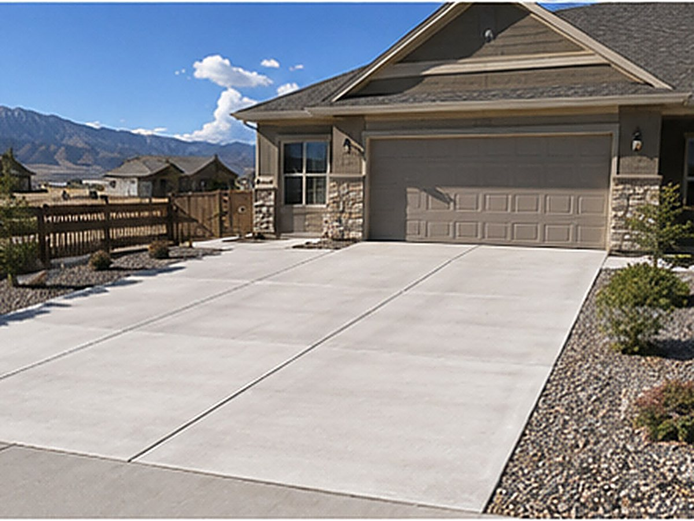

Driveways
New pours, full replacements and widenings sized for how you actually use the space — from daily drivers to RVs and work trailers.

A driveway is usually the largest piece of concrete on a property and the one that takes the most punishment. In the Tooele Valley it carries vehicles every day, then sits through winters that drop below freezing at night and summers that climb near ninety. We pour driveways that are built for that life, not just for the day they're finished.
Whether you're paving a brand-new lot in Stansbury Park, replacing a cracked slab in an older Tooele neighborhood, or widening a drive to fit a second vehicle or a trailer, the approach is the same: get the base and the reinforcement right first, then pour and finish for the long haul.
Most failed driveways in the area didn't fail because of the concrete itself. They failed underneath. When the gravel base isn't compacted, or the slab is too thin, or the control joints are missing or spaced wrong, water and frost do the rest. It soaks in, freezes overnight, expands, and pries the surface apart a little more each season.
We tackle that at the source: a properly graded and compacted base for drainage, an air-entrained mix that tolerates freeze-thaw, the right thickness for the load, and control joints cut at the correct spacing so the slab cracks where you want it to instead of where you don't.
A standard car-and-truck driveway is typically poured at four inches over a compacted base. But a lot of valley properties aren't standard. If you're parking an RV, a boat, a loaded work trailer or heavier trucks, four inches isn't enough — we step up to five or six inches and add reinforcement so the slab doesn't crack under the weight.
We'll ask how you use the driveway before we quote it, because over-building every slab wastes your money and under-building the wrong one wastes the whole pour.
New construction driveways get poured to match your garage slope and drainage so water moves away from the house, not toward it. Replacements start with a clean tear-out of the old slab and a fresh base, not a patch over a problem. Widenings are tied in carefully so the new section sits level with the old and the joint between them is clean.
Most driveways get a broom finish for grip in snow and ice, but we can also do smoother or decorative borders if you want the look. Just as important is where the water goes: we set the slope and joints so melt and runoff drain off the surface and away from your foundation through every freeze and thaw.
As a general guide, driveway flatwork in the area tends to run in the same range as other concrete work — roughly eight to sixteen dollars per square foot installed — with thicker, reinforced or decorative pours costing more. Removing an old slab, tricky access and grading all move the number. Those are ballpark ranges, not a quote: every driveway is different, so we give you a free written estimate after seeing the site.
Common questions
A well-built concrete driveway here can easily last several decades. The difference between a slab that lasts and one that fails early is almost always the base prep, thickness, mix and joint spacing — the parts you can't see once it's poured. Sealing it periodically helps it shrug off road salt and freeze-thaw.
Often, yes. If the damage is limited to one section, we can saw-cut and replace that area and tie it into the existing slab. If the cracking is widespread or the base has failed underneath, a full replacement usually costs less over time than chasing repairs. We'll give you an honest read after we look.
It depends on the load and thickness. Many residential driveways do fine with properly placed mesh, while thicker drives that carry RVs, trailers or heavy trucks call for rebar. We spec the reinforcement to the way you actually use the driveway rather than applying one rule to every job.
Plan to stay off it for about a week with normal vehicles, and wait roughly a month before parking anything heavy or fully loaded so the concrete reaches full strength. You can usually walk on it the next day. We leave you clear instructions when we finish.
That's part of the job. We set the slope and control joints so water runs off the surface and away from your home and garage, which matters even more here because standing water that freezes overnight is what damages concrete fastest.
Related work
Level pads for RVs, trailers and detached garages on bigger valley lots.
Cracked or heaved drive? An honest repair-versus-replace recommendation.
Front walks and approaches poured with proper slope and joints.
Free, no pressure
Call or text for the fastest answer — most estimates are scheduled within a day.
(385) 469-5163